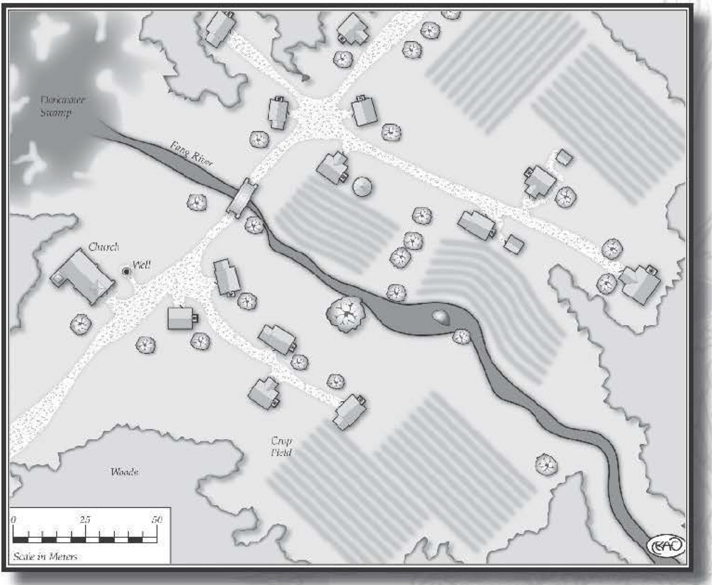

Delmara, Forest-side Hamlet¶
Standing alongside a trade route is the small hamlet of Delmara. The ancient deciduous forest that edges the city provides the inhabitants with the material for housing, fuel, and trade. Carpenters, wainwrights, and shipwrights favor the ancient hardwood trees in the area, providing most of the 300 denizens with a valuable commodity for barter. Those in Delmara who are not foresters rely upon farms for their sustenance, selling their excess nuts, fruits, vegetables, and livestock at markets. Even though the hamlet is small, it’s situated upon a heavily traveled trade road, bringing many merchants to the settlement. In turn, Delmara’s solitary inn is quite successful and is a favored gathering point at sunset. Not even Bede Trowbryde, Delmara’s mayor, is immune to the appeal of the Forest Nymph Inn.
Although the fertile ground makes the land surrounding Delmara perfect for farming, its rich soil Jacks an abundance of stone. Over the years, many people have attempted to dig a stone quarry, but each attempt has failed as there’s seldom enough stone for the construction of more than one or two buildings. The majority of the structures in the settlement are wattle and daub buildings. These are constructed of woven strips of oak, covered with a mud and straw plaster to insulate against the cold weather.
Delmara Forest¶
Spanning for miles around the hamlet are the tall, brooding hardwood trees of the Delmara Forest. Bards sing songs about this ancient woodland, and the resilient trees. The songs recount a history of a forest imbued with magical properties, tended and farmed by Elves. The Delmara Forest in these songs is often called the Bowood Forest, as it’s told that for centuries elves used the trees to make beautiful and powerful bows. Most folk in Delmara consider this nothing more than a folktale. Certainly many bowyers have attempted to construct bows from the hardwood of the trees, but none have succeeded, as the wood either cannot be bent or snaps during shaping.
Darkwater Swamp¶
Just north of Delmara is the foreboding Darkwater Swamp. This place is avoided by aJJ of the inhabitants of the hamlet. Both animals and people have lost their lives in this treacherous region. Many folk believe that the swamp is not natural, that it’s a living thing itself. It’s said that it often calls to those who wander within its sight, luring them into its watery clutches with familiar voices. Or its fetid stench is replaced by an alluring smell of food that leads animals to a watery grave. At night, for those who dare to look, lights are often seen floating over the black waters, dancing about as though they were alive. All who visit Delmara are warned away from the Darkwater Swamp.

The Hamlet¶
Pushcart Market: Just off the road, north of the Forest Nymph Inn, is where the local farmers gather each day with their pushcarts. In this small, mobile market, fresh fruits and vegetables are sold. Salted and smoked meat is also offered. While the hamlet is small, the market sees much traffic, as all of the locals, and some travelers, frequent the spot for food. On occasion, a traveling caravan that offers cloth, spices, pottery, and other rare products joins the farmers. By noon each day, the pushcarts vanish as quickly as they appeared, only to return again on the morrow.
Church: One of the few buildings to be constructed of stone is Delmara’s church. In the early years of the hamlet, the cleric Cernay Avers arrived, and with his newly acquired flock, constructed the church. Believing the daub and wattle building did not properly serve his deity, Cernay convinced his sect to rebuild the church in stone. It’s become an emblem of Delmara’s staunch and steadfast devotion. Many travelers who encounter Cernay find him a trifle over zealous. The locals tend to overlook his determined attitude.
Cernay Avers, Cleric: Agility 2D+1, melee combat 4D+1, Coordination 2D, throwing 2D+2, Physique 2D, Intellect 3D, cultures 4D, reading/writing 3D+1, scholar 3D+1, speaking 3D+1, Acumen 3D, search 3D+1, Charisma 3D, mettle 4D, Extranormal 2D, divination 3D, favor 2D+1, strife 2D+2. Disadvantages: Devotion (R3), to religion; Employed (R2), must follow sect’s regulations, Move: 10, Strength Damage: 1D, Fate Points: 0, Character Points: 2, Body Points: 16, Equipment: robes; coins; pouches containing holy symbols; mace (damage +1D+1).
Bede Trowbryde’s House: Opposite the Fang River from the church stands Delmara’s second stone building, the mayor’s house. When the building was first erected, the intention was to make it the abode of the elected mayor. As it happens, Bede Trowbryde has been the elected mayor for 20 years. Most of the people in the hamlet now simply refer to the dwelling as the “Trowbryde House” or “Bede ‘s House.” Because of the stone and mortar used, the building stands two stories high, and is quite comfortable compared to many of the smaller residences in Delmara.
Bede Trowbryde, Mayor: Agility 2D, riding 2D+1, Coordination 2D, sleight of hand 2D+2, Physique 2D, running 2D+1, Intellect 2D, cultures 3D, reading/writing 2D+2, scholar 3D, speaking 3D, trading 4D, Acumen 2D, hide 2D+1, streetwise 4D, search 3D, Charisma 3D, bluff 3D+2, charm 4D, persuasion 3D+1. Advantages: Authority (R2), mayor, Move: 10, Strength Damage: 1D, Fate Points: 0, Character Points: 1, Body Points: 16, Equipment: fine clothes; cloak; hat; pouch with coins.
Settlement Considerations
Settlements in fantasy settings vary depending upon many factors. Population, resources, location, and trade are often the influential elements that give a settlement its distinct personality, whether it’s a small hamlet or a booming metropolis. Some locations serve focal points for trade and travelers, while others may possess small populations but have abundant mineral mines or farms. Gamemasters need to consider these aspects when designing settlements or when heroes are exploring them. Every city is distinct. Intrigue, adventure, and excitement are plentiful in such places. Avoid making villages nothing more than spots to purchase equipment; doing so, while sometimes entertaining for players, slows the pace of a scenario. This is not to say that the players’ characters should not be allowed to resupply; rather, gamemasters can take advantage of this to introduce subplots, new characters or entirely new adventures. The locations included in this chapter serve as templates and ready-made settlements for immediate use. Additionally, the “Settlement Design Sheet” provides a quick system for creating hamlets, villages, towns, cities, and other similar places.